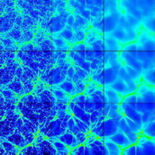
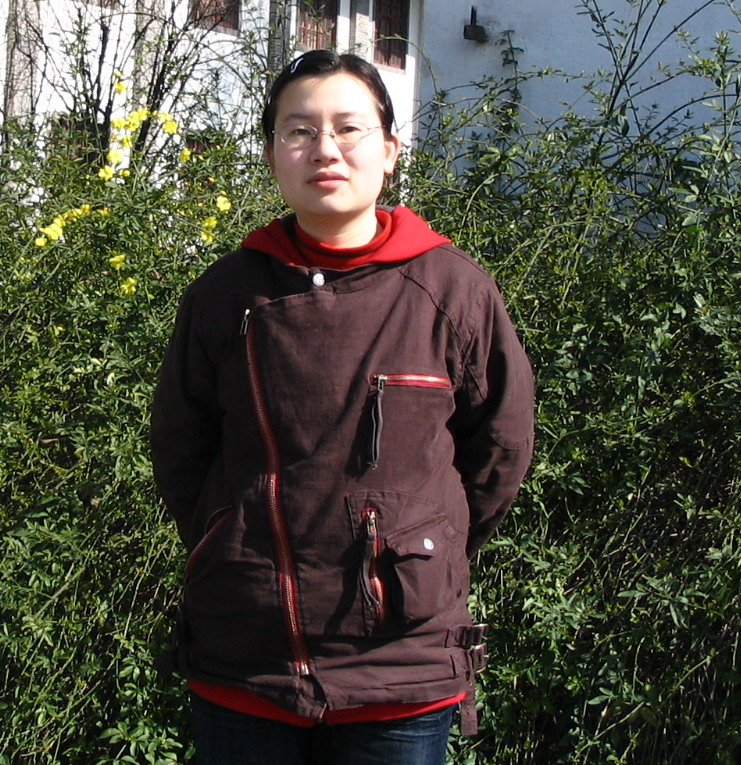

The Gravity and Cosmology Research Group
INPAC, Department of Physics, Shanghai Jiao Tong University
Black Hole, Gravity
Dark Energy, Cosmic Microwave Background, Large-scale Structure
News
Speaker: David Blair
Resources:Probing the Dark Side of the Universe in Gravitational Waves
Details:Slides of the talk.
Speaker:Bin Wang
Resources: Gravitation-1.pdf, Gravitation-2.pdf
Details: Notes for Summer School on Particle Physics, Astrophysics and Cosmology. 2005, Zhejiang.
Professor
Professor: Bin Wang
Professional History:
2010/7 - Present: Professor of Physics, Shanghai Jiao Tong University
2001/7 - 2010/5: Professor of Physics, Fudan University
Scientific Interests:
He has interest working in the fields of extreme black hole entropy and its relation to topology, perturbations around black holes, basic properties of gravity, cosmic holography, dark energy and dark matter.
Major honors and awards:
1998: T.D. Lee Researcher Award, Fudan University
2003: Cross-Century Excellent Young Researcher Award, Ministry of Education of China
2005: National Excellent Young Researcher Award, National Natural Science Foundation of China
Research
Cosmology
Dark Energy
 Recently, the modern cosmology has been experiencing a rapid development facilitated by the unprecedented improvement in the accuracy of observations. The latest experiments suggest that our universe consists of 73% dark energy (DE), 23% cold dark matter (CDM) and the usual baryonic matter only accounts for a small fraction of the content with no more than 4% in amount. Nevertheless, it is dramatic to know that the dominated bulk of the universe is an exotic field divergent from the usual one with positive energy density but negative pressure. The mystery of the existence of such ingredient in the universe has attracted most of the brilliant brains to come up with various theories to unveil its nature. During the last decade, great effort has been made both in experiments and theories, however, the questions in regards dark energy are still challenging:
Recently, the modern cosmology has been experiencing a rapid development facilitated by the unprecedented improvement in the accuracy of observations. The latest experiments suggest that our universe consists of 73% dark energy (DE), 23% cold dark matter (CDM) and the usual baryonic matter only accounts for a small fraction of the content with no more than 4% in amount. Nevertheless, it is dramatic to know that the dominated bulk of the universe is an exotic field divergent from the usual one with positive energy density but negative pressure. The mystery of the existence of such ingredient in the universe has attracted most of the brilliant brains to come up with various theories to unveil its nature. During the last decade, great effort has been made both in experiments and theories, however, the questions in regards dark energy are still challenging:
What is the dark energy?
Is it much different from the sauce? How did it taste?
Cosmic Microwave Background
 The research on Cosmic Microwave Background (CMB) was honored twice by Nobel Prize in Physics. The first one was given to two American engineers Penzias and Wilson in 1978 for their discovery of the remains of the black body spectrum of cosmic background radiation. The second one was awarded to John C.Mather and George F.Smoot in 2006 for their remarkable leadership of the COBE science group on finding the anisotropies of the CMB. The figure on the right shows the most recent results of such anisotropy which was got by WMAP satellite launched in 2001 by NASA. The unprecedented precise and accurate result from WMAP is a milestone which ushers us in the era of precision cosmology. The map encodes the very information that we want to unveil the nature of the universe.
The research on Cosmic Microwave Background (CMB) was honored twice by Nobel Prize in Physics. The first one was given to two American engineers Penzias and Wilson in 1978 for their discovery of the remains of the black body spectrum of cosmic background radiation. The second one was awarded to John C.Mather and George F.Smoot in 2006 for their remarkable leadership of the COBE science group on finding the anisotropies of the CMB. The figure on the right shows the most recent results of such anisotropy which was got by WMAP satellite launched in 2001 by NASA. The unprecedented precise and accurate result from WMAP is a milestone which ushers us in the era of precision cosmology. The map encodes the very information that we want to unveil the nature of the universe.
The Large-scale Structure
 The large-scale structure of the universe refers to the characterization of observable distributions of matter and light on the largest scales. There is much work in cosmology which attempts to model the large-scale structure of the universe. Using the big bang model and assumptions about the type of matter that makes up the universe, it is possible to predict the expected distribution of matter, and by comparison with observation work backward to support and refute certain cosmological theories. The figure on the right displays the evolution of these foam and filament structure in the universe.
Parallel Computation
 In the simplest sense, parallel computing is the simultaneous use of multiple compute resources to solve a computational problem. When the problem is time exhaust by using a single CPU, or it needs to handle a large system with millions of particles, the parallel computing is powerful on this occasion. Our department can provide an excellent service of the compute resources. There are several well operated clusters in the department, which can provide thousands of CPU hours annually for clients. Now, we are trying to exploit a new direction by making use of these facilities to implement a N-body simulation code to investigate the Large-scale structures of the universe under various cosmological models.
In the simplest sense, parallel computing is the simultaneous use of multiple compute resources to solve a computational problem. When the problem is time exhaust by using a single CPU, or it needs to handle a large system with millions of particles, the parallel computing is powerful on this occasion. Our department can provide an excellent service of the compute resources. There are several well operated clusters in the department, which can provide thousands of CPU hours annually for clients. Now, we are trying to exploit a new direction by making use of these facilities to implement a N-body simulation code to investigate the Large-scale structures of the universe under various cosmological models.
Further Readings
| Dark Energy: Report of the dark energy task force, arXiv:astro-ph/0609591 |
| Cosmic Microwave Background: R. Durrer, arXiv, arXiv:astro-ph/0109522 |
| M. Giovannini,Int.J.Mod.Phys. D14,363(2005),arXiv:astro-ph/0412601 | A. Riotto, arXiv:hep-ph/0210162 |
| C. G. Tsagas, A. Challinor, R. Maartens, arXiv:astro-ph/0705.4397 |
| G. F. R Ellis, H. V. Elst, arXiv:gr-qc/9812046 |
| The Large-scale Structure : L. Wang, P. J. Steinhardt,arXiv:astro-ph/9804015 |
Gravity
What is black hole?
 Laplace (1795) noted that a consequence of Newtonian gravity and Newton's corpuscular theory of light was that light could not escape from an object of sufficiently large mass and small radius.
Laplace (1795) noted that a consequence of Newtonian gravity and Newton's corpuscular theory of light was that light could not escape from an object of sufficiently large mass and small radius.
Einstien (1915) published his theory of general relativity. Schwarzschild (1916) derived a general relativistic solution for the gravitational field surrounding a spherical mass: Schwarzschild black holes.
Wheeler (1968) studies the problem of gravitational collapse - coins the term black hole.
Do Black Holes Exist?
 Two types of black hole believed to have been observed:
Two types of black hole believed to have been observed:
> The remnants of dead stars, with fairly small mass
> Supermassive black holes
Very small black holes could exist:
> In the early universe
> In space-time foam
Searching for black holes

 Study X-ray binary systems. These systems consist of a visible star in close orbit around an invisible companion star which may be a neutron star or black hole. The companion star pulls gas away from the visible star.
Study X-ray binary systems. These systems consist of a visible star in close orbit around an invisible companion star which may be a neutron star or black hole. The companion star pulls gas away from the visible star.
Gravitational wave from black hole Perturbations around the black hole can tell us unique sound of the black hole
Publications
| "Holographic superconductor developed in BTZ black hole background with backreactions." Yunqi Liu, Qiyuan Pan, Bin Wang. arXiv:1106.4353 |
| "Breaking parameter degeneracy in interacting dark energy models from observations." Xiao-Dong Xu, Jian-Hua He, Bin Wang. arXiv:1103.2632 |
| "General holographic superconductor models with backreactions." Qiyuan Pan, Bin Wang. arXiv:1101.0222 |
| "Testing the interaction between dark energy and dark matter via the latest observations." XHe, Jian-Hua, Bin Wang, and Elcio Abdalla. Physical Review D 83, no. 6 (2011). arXiv:1012.3904 |
| "Various types of phase transitions in the AdS soliton background." Peng, Yan, Qiyuan Pan, and Bin Wang. Physics Letters B 699, no. 5 (2011): 383-387. arXiv:1008.3455 |
| "Constraining the interacting dark energy models from weak gravity conjecture and recent observations." Chen, Ximing, Bin Wang, Nana Pan, and Yungui Gong. Physics Letters B 695, no. 1-4 (2011): 30-36. arXiv:1008.3455 |
| "Dynamical perturbations and critical phenomena in Gauss-Bonnet-AdS black holes." Yunqi Liu, Qiyuan Pan, Bin Wang, Rong-Gen Cai, Phys.Lett.B693:343-350,2010. arXiv:1007.2536 |
| " General holographic superconductor models with Gauss-Bonnet corrections" Qiyuan Pan and Bin Wang, Physics Letters B 693, no. 2 (2010): 159-165. arXiv:1005.4743 |
| "Quasinormal modes of charged fermions and phase transition of black holes." Rong-Gen Cai, Zhang-Yu Nie, Bin Wang, Hai-Qing Zhang. arXiv:1005.1233 |
| "Influence on the entropic force by the virtual degree of freedom on the holographic screen." Pan, Qiyuan, and Bin Wang. Physics Letters B 694, no. 4-5 (2011): 456-459. arXiv:1004.2954 |
| "Stability of the warped black string with nontrivial topology in five-dimensional anti-de Sitter spacetime." Yin, Shaoyu, Bin Wang, Robert Mann, Chong Lee, Chi-Yong Lin, and Ru-Keng Su. Physical Review D 82, no. 6 (2010). arXiv:1004.4244 |
| "The interaction between dark energy and dark matter." Jian-Hua He, Bin Wang. J.Phys.Conf.Ser.222:012029, (2010). |
| "Analytical study on holographic superconductors in external magnetic field." Ge, Xian-Hui, Bin Wang, Shao-Feng Wu, and Guo-Hong Yang. Journal of High Energy Physics 2010, no. 8 (2010). arXiv:1002.4901 |
| "Probing the cosmic acceleration from combinations of different data sets." Gong, Yungui, Bin Wang, and Rong-Gen Cai. Journal of Cosmology and Astroparticle Physics 2010, no. 4 (2010): 019-019. arXiv:1001.0807 |
| "Holographic superconductors with various condensates in Einstein-Gauss-Bonnet gravity," Pan, Qiyuan, Bin Wang, Jeferson de Oliveira, and A. B. Pavan. Physical Review D 81, no. 10 (2010). arXiv:0912.2475 |
| " Effects of dark sectors' mutual interaction on the growth of structures " Jian-hua He, Bin Wang, Y. P. Jing JCAP 0907,030(2009), arXiv:0902.0660 |
| " A Field Theory Model for Dark Matter and Dark Energy in Interaction" Sandro Micheletti, Elcio Abdalla, Bin Wang Phys.Rev.D79:123506,(2009) , arXiv:0902.0318 |
| " Quasinormal modes of black holes absorbing dark energy " Xi He, Bin Wang, Shao-Feng Wu, Chi-Yong Lin, Phys.Lett.B673:156-160 (2009) , arXiv:0901.0034 |
+ Earlier Publications
Members
Post-docs

Name: PAN Qiyuan
Education:
Research: Black Hole
PHD Students
{kind=link}

Name: PENG Yan
Education:
Research: Black Hole
{kind=link}
Master Students
{kind=link}
{kind=link}
Name: MA Lei
Education: BSc in Physics, Shandong University (2010.6)
Research: Cosmology
Former Students

Name: HE Jianhua
Education: BSc in Physics,Fudan (2006.6)
Research: Cosmology

Name: YIN Shaoyu
Education: BSc in Physics, Fudan University (2005.6)
Research: High Energy Phyiscs, Black Hole, Cosmology

Name: HE Xi
Education: MSc in Physics in Physics, Hunan Normal University (2007.6) ; BSc in Physics, Hunan Normal University (2004.6)
Research: Black Hole, Cosmology
{kind=link}

{kind=link}
Name: ZHOU Jia
Education: MSc in Physics, Fudan University (2009.6) ; BSc in Physics, Zhejiang University (2006.6)
Research:
Name: FENG Chang
Education:
Research:
Name: Chen Song-Bai
Education:
Research:
Name: Rao Xiao-Ping
Education:
Research:
Name: Du Da-Ping
Education:
Research:
Name: Huang Zhuo-Yi
Education:
Research:
Name: Ye Chi-Zhou
Education:
Research:
Name: Liu Li-Hui
Education:
Research:
Name: Shen Jian-Yong
Education:
Research:
Name: Xue Li-Hui
Education:
Research:
Name: Ahmad Sheykhi
Education:
Research:
Contact
Office: INPAC, Fourth Floor of Bao Yugang Library
TEL: (+86)021-54748990
E-mail: wang_b@sjtu.edu.cn
Address: Shanghai Jiao Tong University, Shanghai 200240, China
View Larger Map
View Larger Map